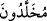

anlamındaki (velîd) kelimesinin çoğuludur. Gençlerin hizmeti, yaşlılarının
hizmetinden daha yararlıdır. Âyette geçen (mühalledûn) kelimesi ise, sözü edilen
hizmetçi gençlerin ebediyen bu durumda kalacaklarını, bu şekil ve tazeliklerini koruyup
hiç değişmeyeceklerini anlatmaktadır. Çünkü, onlar böyle kalmak üzere yaratılmışlardır.
Bu sebeple de şekil ve durumları değişmez.
el-Es’iletü’l-mukhıme’de, “hizmet için olan bu gençler Allah Teâlâ’nın «Her canlı
ölümü tadacaktır» (Âl-i İmran 3/185) âyet-i kerîmesinin hükmüne girerler mi?” diye
sorulmuş, cevap olarak da şöyle denilmiştir: Onlar kıyâmette ölmezler, iki sur arasında
bir uyku verilir. Cennetteki huriler hem hizmet hem de kendilerinden yararlanmak için
oldukları halde bu hizmetli gençlerin cennette müminlere hizmetten başka hiçbir
görevleri yoktur. Yine denildiğine göre, onlar dünya ehlinin çocukları olup,
mükâfâtlanmak üzere bir sevap ve güzel amelleri olmadığı gibi, cezâlanacakları kötü
bir hareketleri de yoktur.
Bir hadis-i şerifte: “Kâfirlerin çocukları cennet halkının hizmetçileridir”[201]
buyrulmuştur. “Vildân” kelimesi, Ebû Hanife’nin, “müşriklerin küçük çocukları cennet
halkının hizmetçileridir” yolundaki görüşüne delildir. Çünkü, cennette doğmak ve
doğurmak hâdisesi yoktur. (muhalledûn) kelimesinin “küpe ile süslenmiş, altın
küpelerle kulaklarını süslemiş” anlamına gelmesi mümkündür. Zira “huld” kelimesi
“haledeh” gibi küpe ve bilezik anlamını taşımaktadır. Çoğulu “kırede” sîgasında
“kırata” olarak gelmektedir. Bütün bu açıklamalar ışığında (vildânün
mühalledûn) tâbiri; küpe ve bilezik takınarak süslenmiş olan, yahut hiçbir zaman
ihtiyarlamayıp hizmetçilik sınırını hiçbir zaman geçmeyerek hep aynı durumda kalan
anlamlarını içerir. Kamusta’da böyle ifâde edilmektedir.
Keşfü’l-esrar’da belirtildiğine göre “hılâde” kelimesi Kahtanîlerin lüğatında
“hılâde” (boyna takılan boyunluk) mânâsını taşımaktadır.
18. Maîn çeşmesinden doldurulmuş testiler, ibrikler ve kadehlerle. (ekvâb), “kûb” kelimesinin çoğulu olup altın ve cevherlerden yapılan kaplar
demektir. Bunlar, kulpu ve emziği olmayan, ağzı geniş ibriklerdir. Hangi tarafından
istenirse, çevirmeğe gerek duymadan içilebilir. Dar emzikli ibrikten içerken nefesini
tutmak ve daralmak gibi zorluklar bunda yoktur. (ebârîk), “ibrîk” kelimesinin çoğuludur. Kulpu ve emziği olan, duruluğundan
(ebârîk), “ibrîk” kelimesinin çoğuludur. Kulpu ve emziği olan, duruluğundan
dolayı pırıl pırıl parlayan berrak bir kaptır. Bunun “âbrîz” kelimesinden arapçaya
geçmiş Farsça bir kelime olduğu da söylenmiştir. Yâni, “kulpları ve emzikleri olan